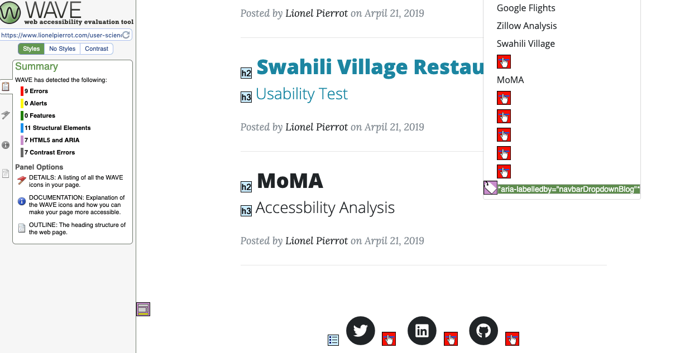
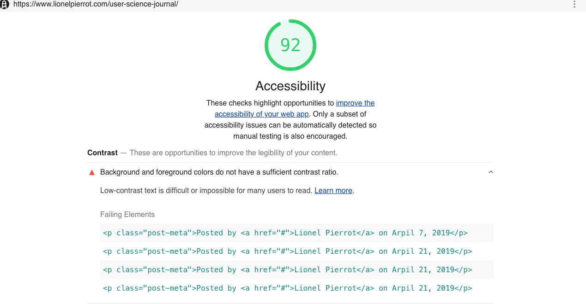
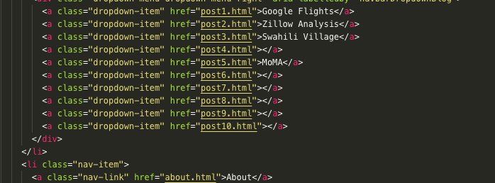
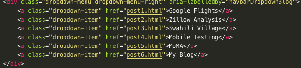
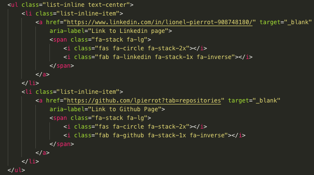
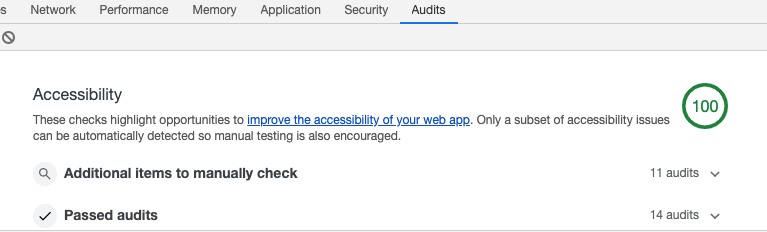

For this week's accessibility report, I tested this blog to see if it adheres W3C principles and WebAim guidelines. As part of a class project and familiarizing myself with accessibility best practices, I will document any errors and attempt to fix them.
For testing purposes, I used different tools including Google's Lightweight, VoiceOver by Apple, WAVE, and Webaim checklist for conformance evaluation. .
For my first audit, I used to wave to scan for errors on all pages, and as you can see in the screenshot below, they were plenty of empty links in navigation section and in the footer section in the social media. Other significant errors, were low-contrast text, which surprisingly scored high with lighthouse.
WAVE
 Wave audit summaryGoogle Lighthouse
 Google lighthouse audit beforeFixing empty links errors on the drop-down was reasonably straightforward. I went back to VS code and removed all the links that did not point to any page.
 Drop-down menu code beforeI had added these links for my previous projects, but as you can see I should have probably removed them. This is what the code looks like after making these changes.
 Empty-links drop-down menu fixedAs for empty links in the footer section, it was a little tricky to fix them.I initially thought that it was due to social media links being empty, but when I added direct links to point to my Linkedin and Github accounts, for some reason, the same errors were still showing up in Wave.
To fix this issue I used aria-label for each icon's anchor tags as suggested on this Drupal forum and that took away the errors.
 Empyty-links errors footer fixedFor low-contrast errors, I created a styles.css file in the CSS directory and targeted the classes that were creating these errors. After making these changes, I tested again using both Wave and Lighthouse did not detect any errors.
 No errors